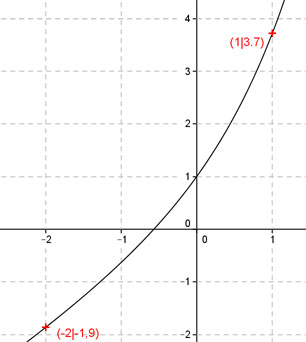
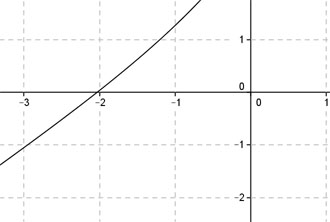

Aufgabe 120 Ergänzen Sie die Wertetabelle für den Graphen: y = x + ex x -2 1 y -1,9 3,7 y = f(1) = 1 + e1 = 1 + 2,7 = 3,7 gerundet  An welchen Stellen x die Funktion den Wert -1,9 annimmt, ist elementar nicht zu ermitteln. Abgelesen: Es ist eine Stelle. Zur Berechnung wendet man ein Näherungs- verfahren an, hier die Regula falsi. x0 = gesuchte Nullstelle x1 * |y(x2)| + x2 * |y(x1)| x0 = ------------------------------ |y(x1)| + |y(x2)| f(x) = -1,9 eingesetzt: -1,9 = x + ex | +1,9 x + ex + 1,9 = 0 Als Funktion: y = x + ex + 1,9 Die Nullstellen dieser Funktion (y = 0) entsprechen den gesuchten Werten für x.  Abgelesen: Nullstelle zwischen -2,5 und -1,5. Nullstelle x0 zwischen -2,5 und -1,5 mit Excel ermittelt: A B C D E F G H I J -2,5 -1,5 0,6232 0,5179 -1,5579 -0,7768 -2,3348 1,1411 -2,0461 -0,0169 -2,0461 -1,5 0,6232 0,0169 -1,2751 -0,0253 -1,3004 0,6400 -2,0317 -0,0006 -2,0317 -1,5 0,6232 0,0006 -1,2661 -0,0009 -1,2670 0,6238 -2,0312 0,0000 -2,0312 -1,5 0,6232 0,0000 -1,2658 0,0000 -1,2658 0,6232 -2,0312 0,0000 Die gesuchte Nullstelle ergibt sich nach mehreren Näherungen mit ausreichender Genauigkeit zu x0 = -2 gerundet. Weitere Erläuterungen zur Tabelle siehe Aufgabe 101.